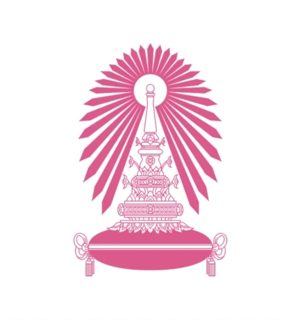
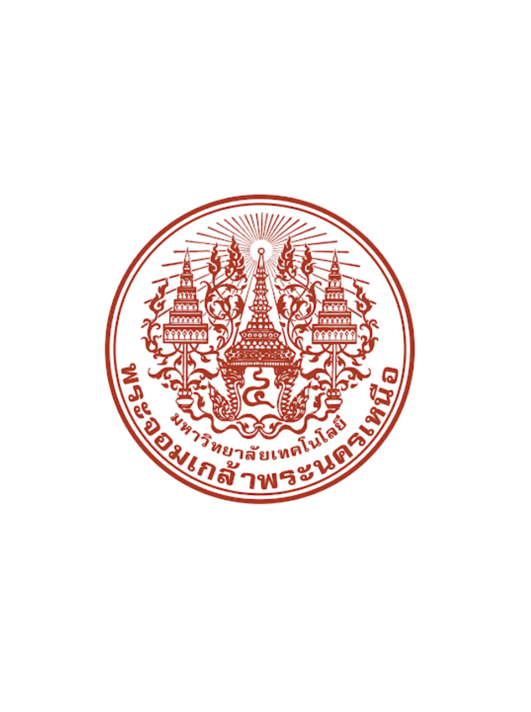
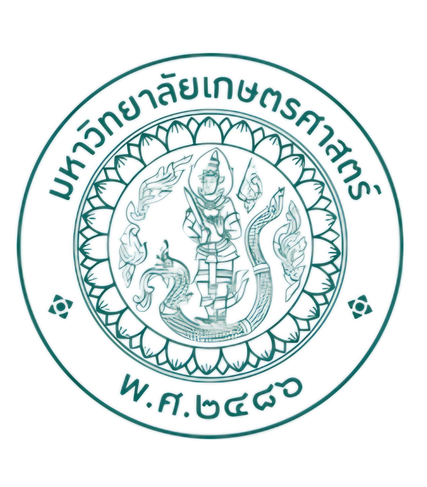

Further study

อันดับ 1
คณะวิศวกรรมศาสตร์ ภาควิชาวิศวกรรมเหมืองแร่และปิโตรเลียม สาขาวิชาวิศวกรรมทรัพยากรธรณี
จุฬาลงกรณ์มหาวิทยาลัย
เป็นมหาวิทยาลัยในฝัน เพราะได้ลองดูคลิปพอดแคสต์ของรุ่นพี่ที่ผมติดตามมาตั้งแต่เด็ก ๆ จนรุ่นพี่ท่านนั้นสอบติดที่นี่ในคณะอื่น ถึงจะไม่ใช่คณะเดียวกัน แต่ก็ทำให้ผมมีกำลังใจมากขึ้นที่จะสอบติดที่นี่ และรู้สึกว่าที่นี่จะเป็นที่ที่ทำให้ผมเติบโตและได้เรียนรู้ตรงกับสายงานที่ต้องการ ที่เลือกคณะนี้เพราะผมสนใจงานด้านการวางแผน ออกแบบ และควบคุมหน้างานขุดเจาะ ทั้งเหมืองเปิดและเหมืองใต้ดิน เช่น เหมืองถ่านหิน เหมืองทองคำ และเหมืองหิน ที่เลือกมหาวิทยาลัยนี้เพราะมีภาควิชาและคณะที่ตรงกับความสนใจ และเชื่อว่าที่นี่จะเป็นที่ที่ดีที่สุด ในการต่อยอดสายงานของผม รวมถึงยังอยู่ใกล้แหล่งที่ผมอยากไปเที่ยวและซื้อของ และได้รวมตัวกับกลุ่มคนที่มีความสนใจเดียวกันในช่วงกิจกรรมต่าง ๆ

อันดับ 2
คณะวิศวกรรมศาสตร์ สาขาวิศวกรรมการบินและอวกาศ
มหาวิทยาลัยเทคโนโลยีพระจอมเกล้าพระนครเหนือ
มีความสนใจคณะนี้เป็นอย่างมาก เนื่องจากตั้งแต่เด็ก ๆ ชอบอะไรที่เกี่ยวกับเครื่องบิน แต่รู้ว่าด้วยสุขภาพและการใช้ชีวิตของตัวเองคงเป็นนักบินไม่ได้ พอทราบว่ามีสายงานด้านการตรวจเช็ค และซ่อมบำรุงเครื่องบิน จึงเกิดความสนใจในคณะนี้เป็นอย่างมาก รวมถึงเคยเห็นรุ่นพี่ท่านหนึ่งทำงานด้านนี้ แล้วรู้สึกชื่นชอบมาก ที่เลือกมหาวิทยาลัยนี้เพราะมีหลักสูตรเทคโนโลยีวิศวกรรมซ่อมบำรุงอากาศยาน (วศ.บ.) ที่สร้างขึ้นมาเพื่อสายงานนี้โดยเฉพาะ

อันดับ 3
คณะวิศวกรรมศาสตร์ สาขาวิศวกรรมอุตสาหการ
มหาวิทยาลัยเกษตรศาสตร์ (บางเขน)
มีความสนใจในสาขานี้ เพราะเป็นสาขาที่เรียนเกี่ยวกับการบริหารจัดการ วางแผน เพิ่มประสิทธิภาพ และลดต้นทุนในกระบวนการผลิตและบริการ ที่เลือกมหาวิทยาลัยนี้เพราะที่นี่โดดเด่นมากในด้านอุตสาหกรรมการผลิต โลจิสติกส์ และการจัดการโซ่อุปทาน รวมถึงตอบโจทย์ภาคธุรกิจได้เป็นอย่างดี